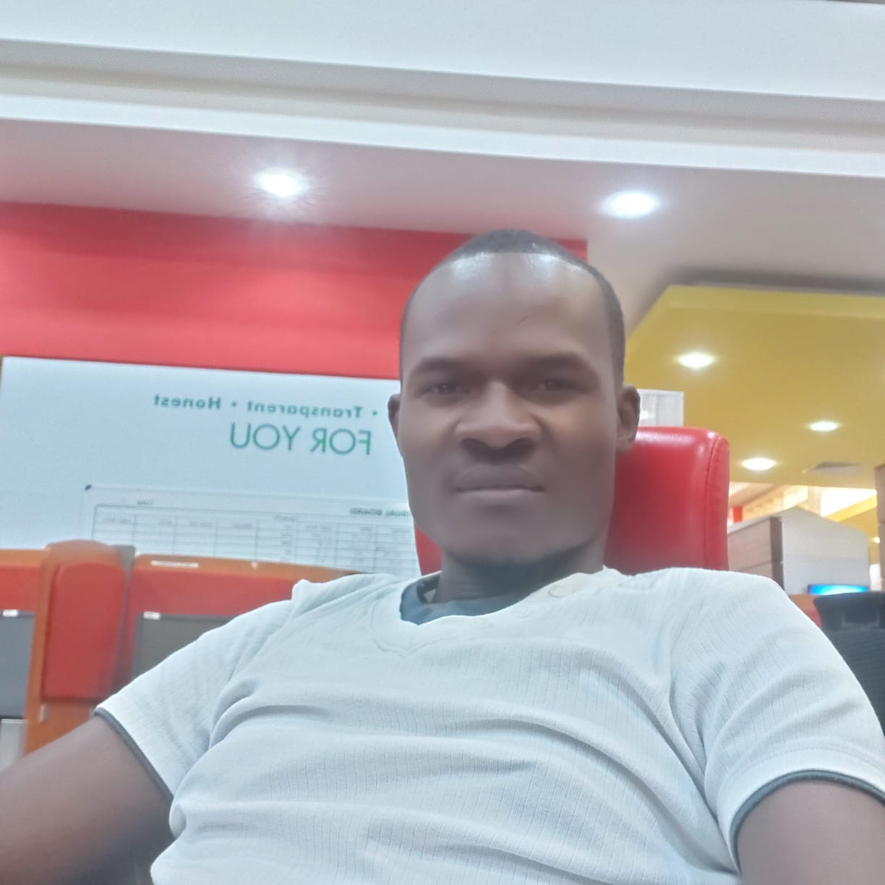
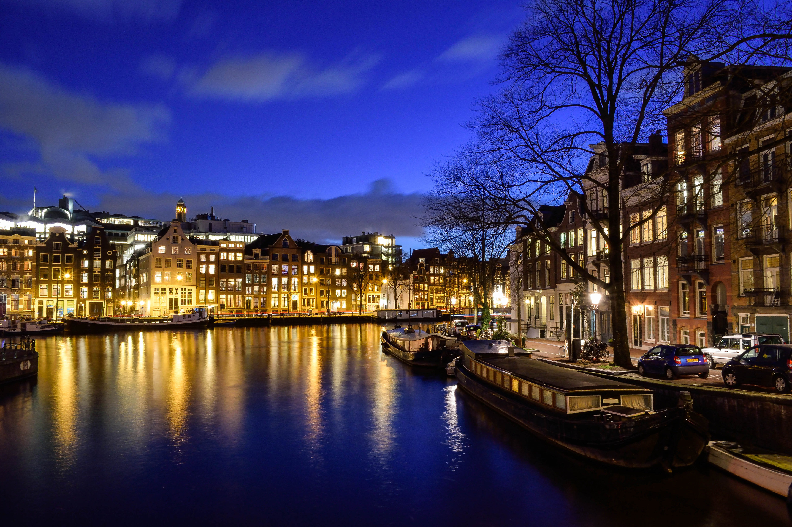

About Me Bill Clinton Otunga
I am a learning software developer who is generally passionate about technology. I am currenly learning Software Engineering at Moringa School. I have learnt about Git, Github, HTML, CSS, and Grid Box. This project is to practice the above skills. Using VS Code as my editor, I experiment with various styling features and compare outputs. Read further to know more about me. You may click the links on the top menu bar to skip to any section of of the portfolio.
Projects
The links below are for projects that I have completed since my software development journey began. All are built using just HTML and CSS.

Basic Webpage
This was a practice project to learn how websites work and the building blocks needed for building a basic website. It has an image.

City Pictures
This is a project where I show random pictures of five major world cities. The links are set to open the image on a new tab upon clicking
Change The World
This is a project where I build a site to change the world, end racism, farmine, and drought. This is one silver bullet to all world problems
Interests and Hobbies
I love reading business and science books. I also love exploring about how computers and mobile devices work. On the side of my main job, I am also a writer, which I mostly do for leasure. I write all kinds of articles and academic papers including thesis, dessertations, research papers, CVs, etc.